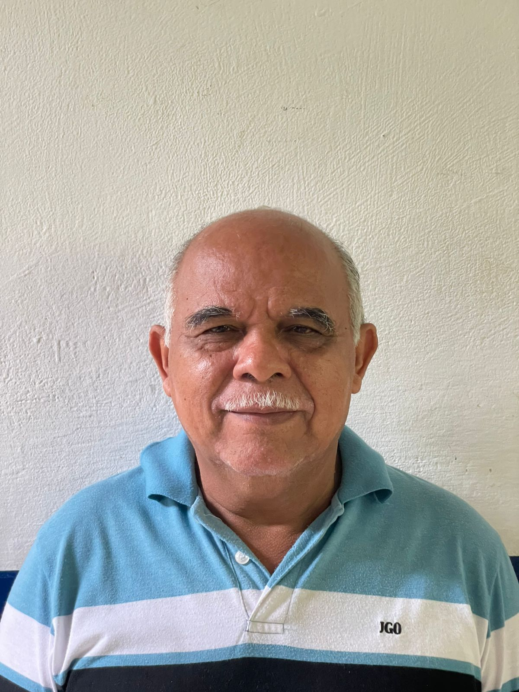
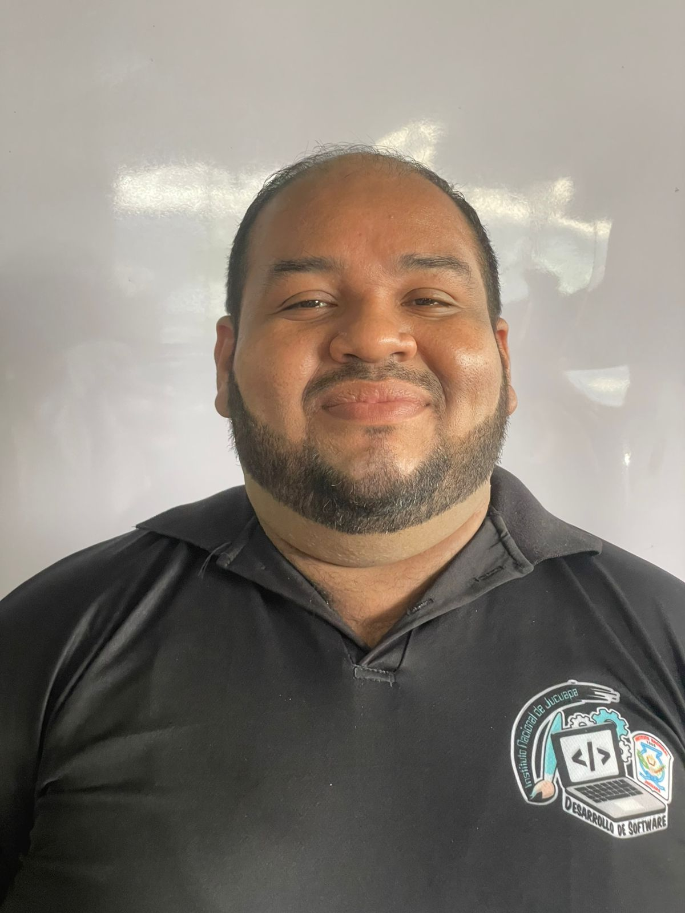
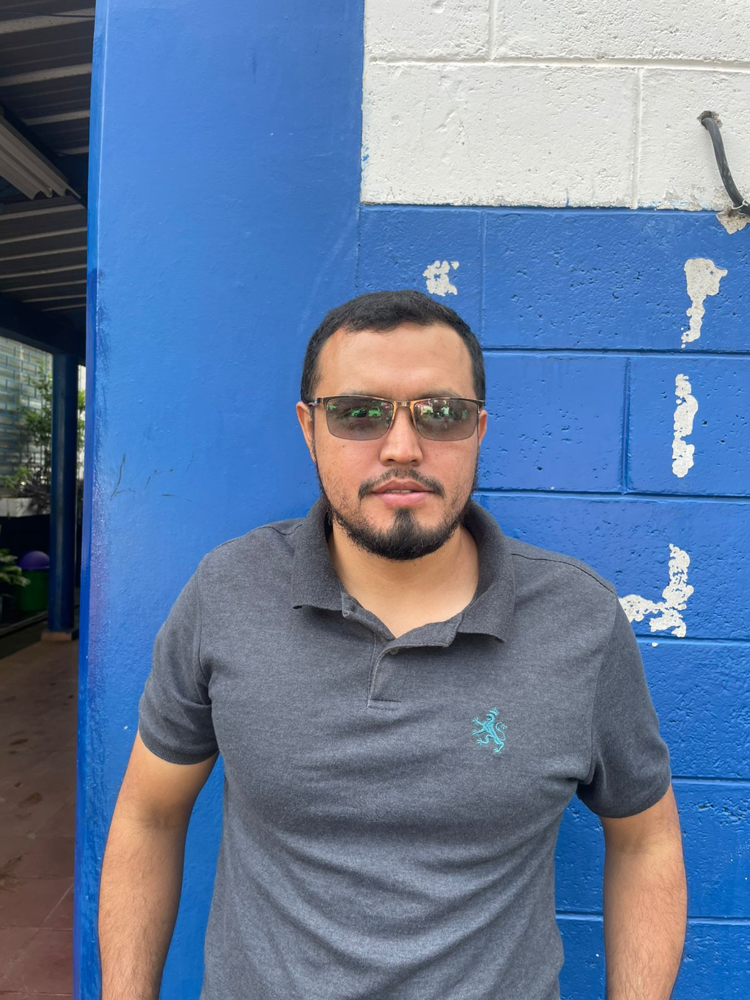
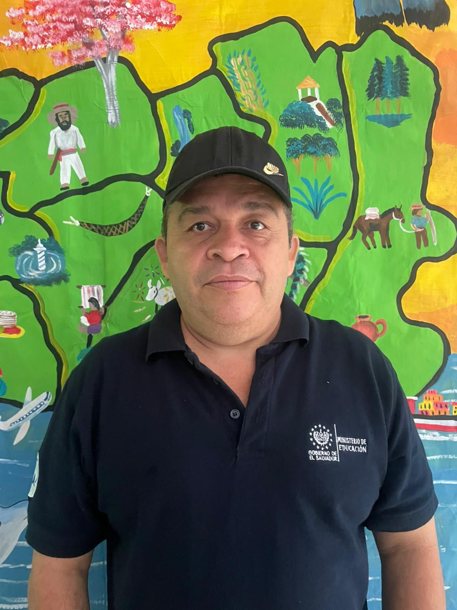
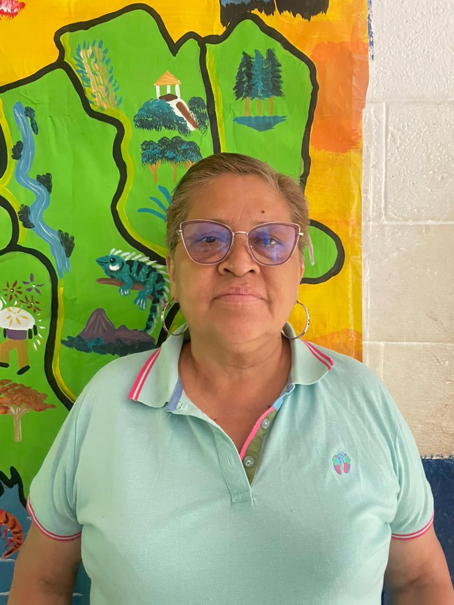
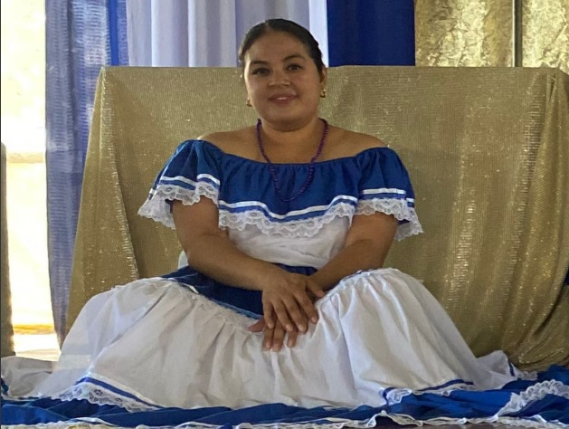
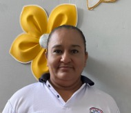
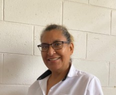
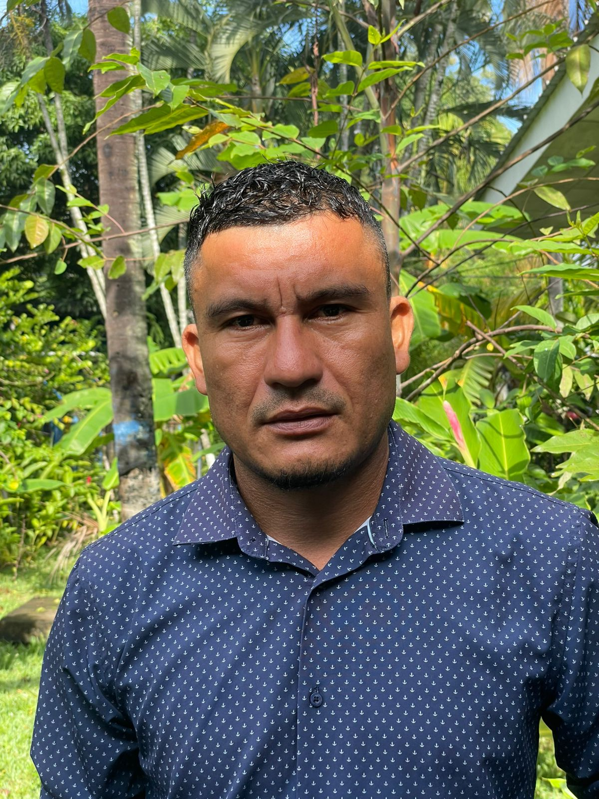
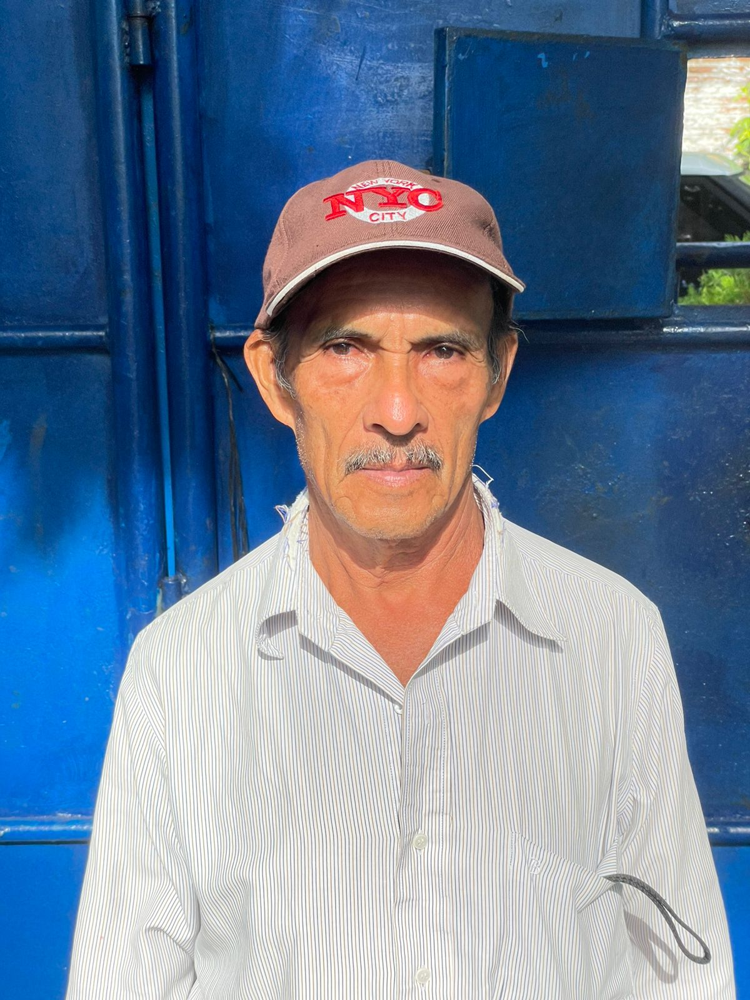

"Juntos construimos el futuro de Jucuapa, un estudiante a la vez."
Nuestro Personal Educativo
En el Instituto Nacional de Jucuapa (INJU), creemos firmemente que la excelencia académica se construye sobre un pilar fundamental: nuestros educadores. Más que profesionales, son mentores, guías y el motor que impulsa el futuro de nuestra querida Jucuapa.
Te invitamos a conocer a las personas que día a día dedican su vida a construir un mejor futuro para nuestra comunidad.

Lic. Giovani Orlando Orellana
Director General
Administración Educativa
Liderando la institución con visión estratégica y compromiso con la excelencia educativa.
Coordinación Académica

Prof. Mirna Granados
Coordinadora Académica
Gestión Académica
Coordinando los procesos académicos y supervisando la calidad educativa.
Prof. Carlos Lizama
Subdirector
Gestión Educativa
Apoyando la dirección y gestionando las actividades administrativas.
Docentes de Especialidades Técnicas

Lic. Efraín Martinez
Docente
Administrativo Contable
Especialista en contabilidad, administración y finanzas empresariales.
Lic. Roberto Antonio
Docente
Desarrollo de Software
Experto en programación, bases de datos y desarrollo de aplicaciones.

Ing. Humberto Batres
Docente
Desarrollo de Software
Especialista en desarrollo web y tecnologías de la información.

Luis Romero
Docente
Mantenimiento Automotriz
Técnico especializado en sistemas automotrices y diagnóstico computarizado.

Licda. Marina Romero
Docente
Atención Primaria en Salud
Profesional de la salud con experiencia en atención primaria y comunitaria.
Tec. Vilma Rivera
Docente
Atención Primaria en Salud
Tecnóloga en salud con enfoque en atención primaria y promoción de la salud.
Docentes de Formación General

Prof. Yanira Guadalupe
Docente
Lenguaje y Literatura
Formando habilidades comunicativas y pensamiento crítico.

Prof. Oscar Ramirez
Docente
Matemáticas
Desarrollando el razonamiento lógico y habilidades analíticas.

Prof. Morena Mejicanos
Docente
Ciencias Comerciales
Formando emprendedores con visión estratégica y habilidades financieras para la gestión efectiva de negocios y recursos.

Prof. Lorena Campos
Docente
Estudios Sociales
Formando ciudadanos conscientes y críticos de su realidad social.

Prof. katherine Solórzano
Docente
Inglés
Desarrollando competencias comunicativas en segunda lengua.
Prof. Melvin Lazos
Docente
Educación Informatica
Formando ciudadanos digitales conscientes y críticos de su entorno tecnológico.
Licda. Azalia González
Docente
Ciencias Naturales
Formando exploradores conscientes y críticos del mundo natural.
Personal de Apoyo

Licda. Yaneth Gallegos
Secretaria
Administración
Gestionando los procesos administrativos y atención estudiantil.

Prof. Martha Isabel García
Coordinadora académica
Administración
Liderazgo curricular para asegurar la calidad pedagógica y la innovación educativa.

Ismael
Conserje
Mantenimiento
Manteniendo nuestras instalaciones en óptimas condiciones.

Mario
Vigilante
Seguridad
Garantizando la seguridad de estudiantes y personal.